Arquitectura, textos y llamadas a la acción para que el visitante entienda rápido qué ofrece el negocio.
Consultoría y desarrollo web para empresas
Proyectos web que convierten necesidades de negocio en resultados reales.
8 webs finalizadas
5 sectores distintos
100% orientado a negocio
Perfil
Perfil técnico en desarrollo web y soluciones digitales.
Soy Denis Noguera. Llevo 6 años formándome en informática y actualmente curso Ingeniería Informática, combinando base técnica y desarrollo web con interés y formación activa en inteligencia artificial.
Mi enfoque no es hacer solo páginas bonitas: trabajo cada web como una herramienta para captar clientes, ordenar reservas, presentar servicios y transmitir una imagen más seria desde el primer contacto.
Flujos claros para que el cliente pueda pedir, reservar o contactar sin perderse.
Diseño responsive y consistente para que el negocio parezca cuidado, serio y fácil de entender.
Proyectos web
Proyectos reales para negocios que necesitaban presencia digital clara.
Cada proyecto está construido alrededor de una necesidad concreta: vender mejor, recibir reservas, presentar servicios o facilitar el primer contacto con el cliente.
Marca y reservas
Estudio de tatuajes
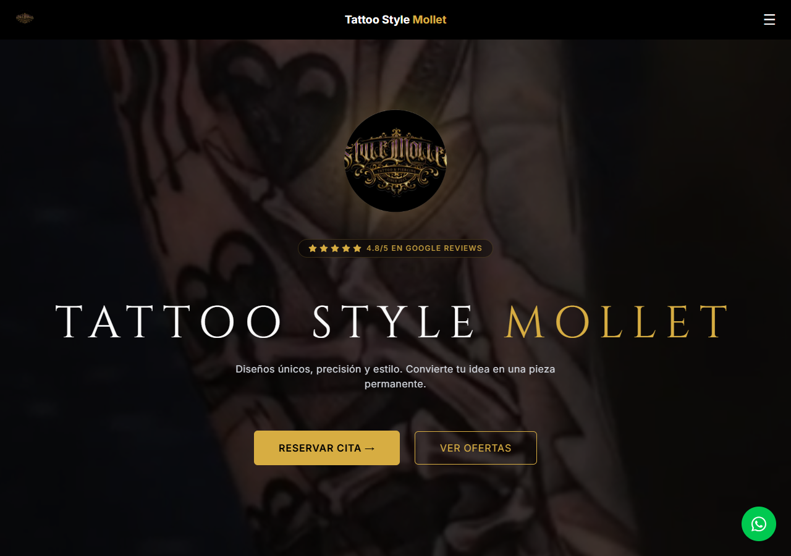
Tattoo Style Mollet
Sitio web para estudio de tatuajes, enfocado en presentar el estilo del negocio, generar confianza visual y dirigir al cliente hacia el contacto o la reserva.
- Identidad visual fuerte y profesional
- Presentación de servicios y trabajos
- Contacto rápido para potenciales clientes
Reservas
Peluquería canina
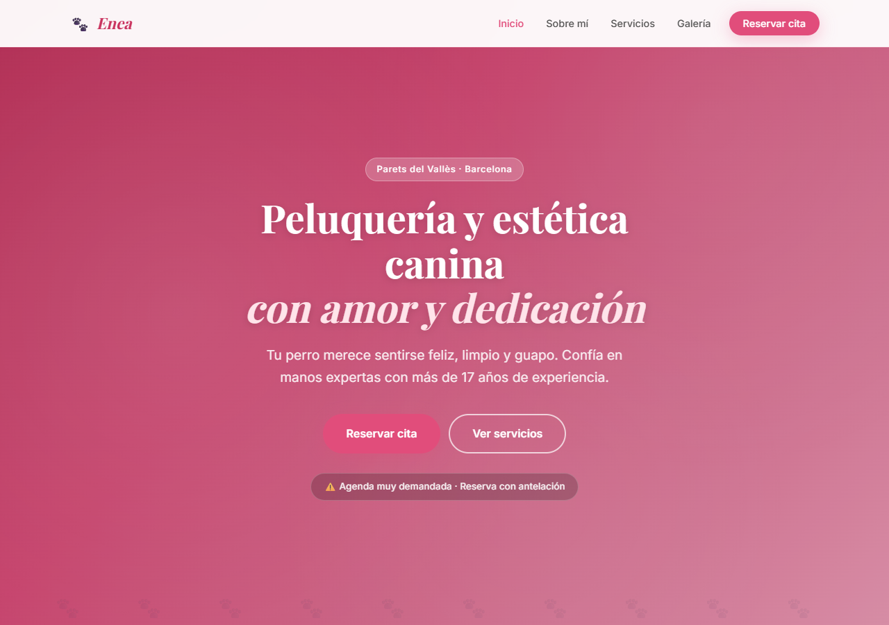
Peluqueria Canina Enea
Web para peluquería canina con servicios, galería, opiniones y un flujo de reserva para que el cliente pueda elegir servicio, día, hora y dejar sus datos.
- Reserva guiada paso a paso
- Galería y prueba social
- Información clara de servicios y contacto
Carta digital
Restauración
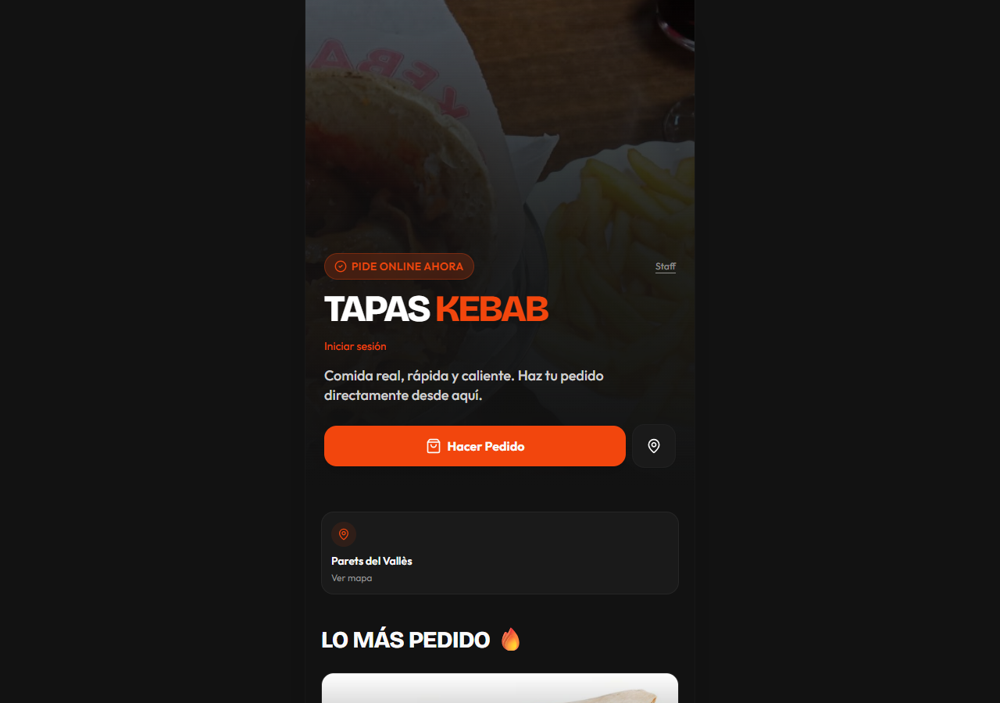
Tapas Kebab
Web para restaurante con presentación de oferta, navegación sencilla y enfoque en que el cliente encuentre rápido qué pedir o cómo contactar.
- Presentación clara del negocio
- Experiencia sencilla para móvil
- Orientación a pedido y contacto
Reservas online
Barbería
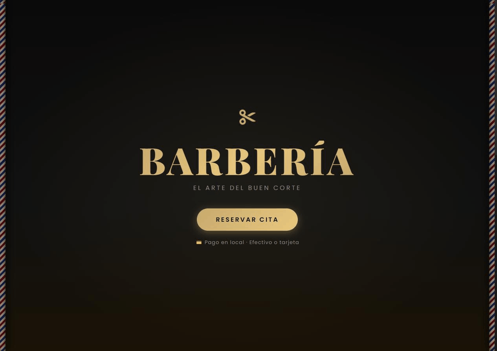
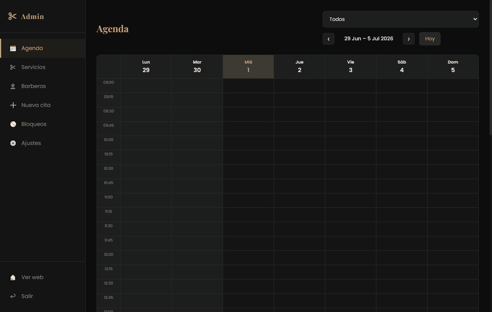
Barbería
Web para barbería con reserva de cita en menos de un minuto, y un panel de administración propio para gestionar agenda, servicios y barberos.
- Reserva guiada por servicio, barbero y hora
- Panel admin con agenda, servicios y bloqueos
- Confirmación por email al cliente
Turismo activo
Viajes de surf
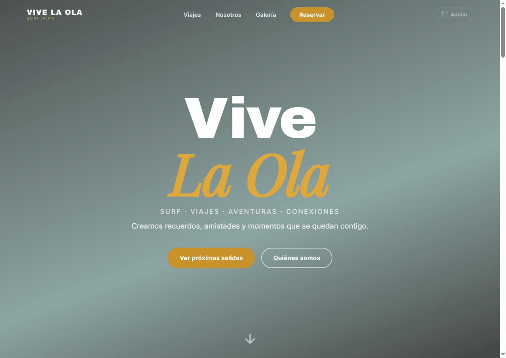
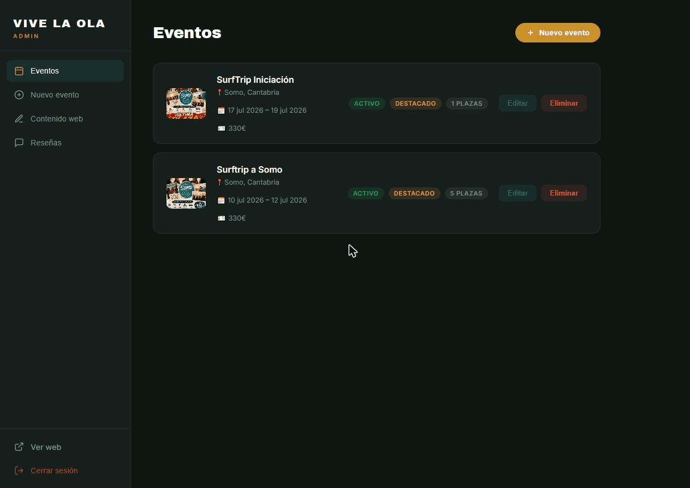
Vive la Ola
Web para una agencia de viajes de surf, pensada para presentar cada escapada, sumar reseñas de clientes y facilitar la reserva por WhatsApp. Incluye panel para gestionar viajes y opiniones.
- Fichas de viaje con plazas, fechas y precio
- Reseñas de clientes con fotos
- Panel admin para viajes y contenido
Pedidos para recoger
Rostissería
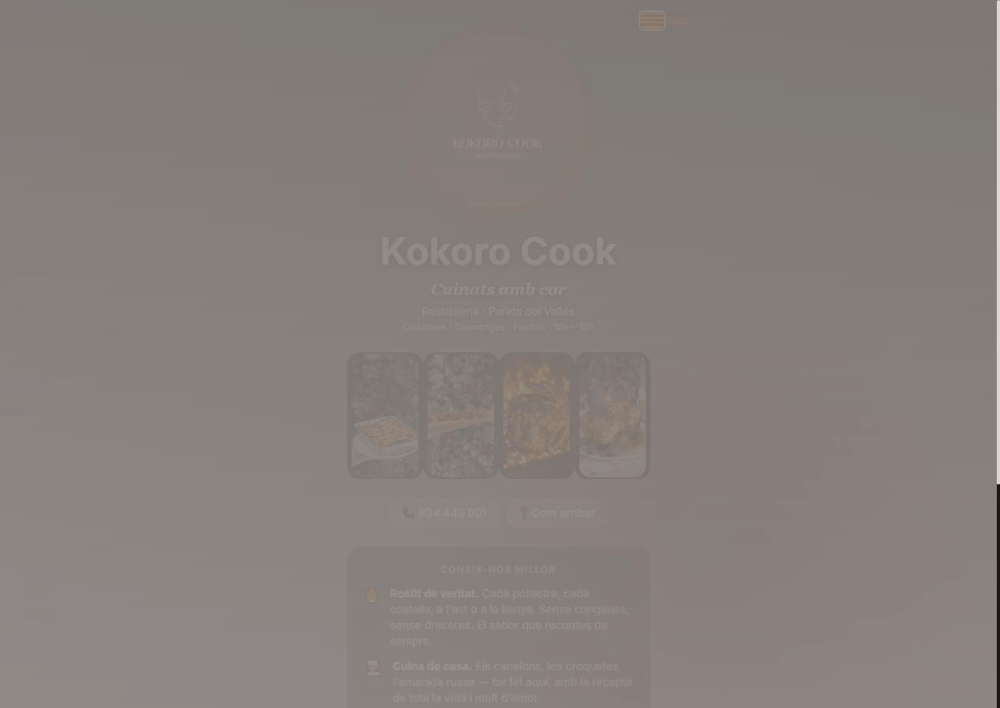
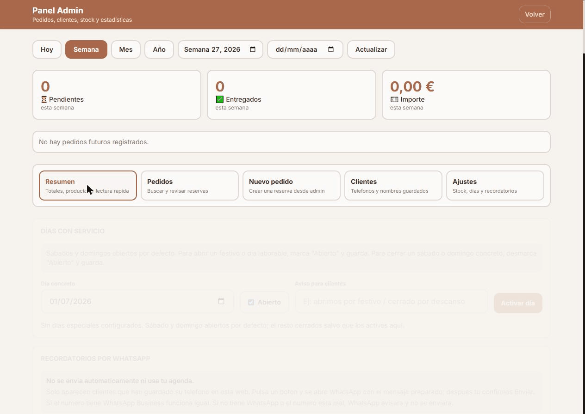
Kokoro Cook
Web de pedidos para recoger en tienda, con panel de administración propio para ver pedidos, estadísticas de la semana y ajustes de horario.
- Reserva de día y hora de recogida
- Panel admin con pedidos y estadísticas
- Ajustes de días con servicio y avisos
Web corporativa
Restauración
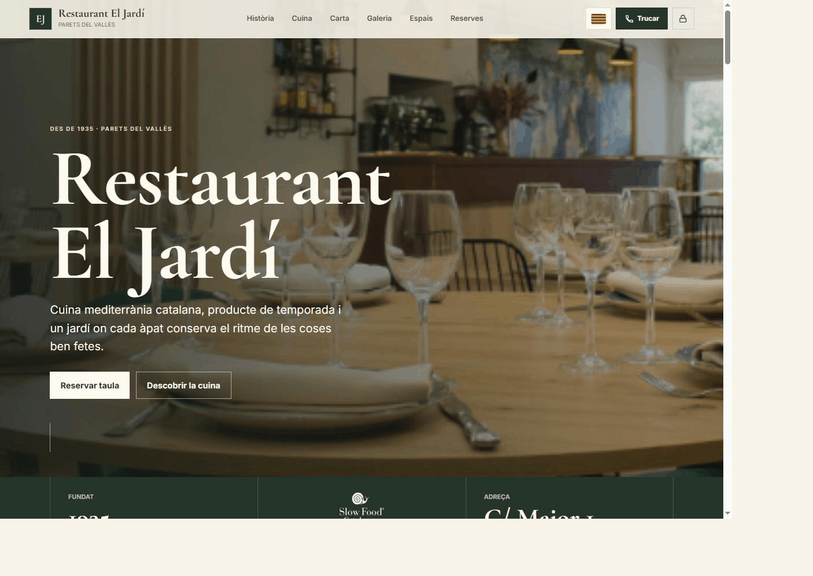
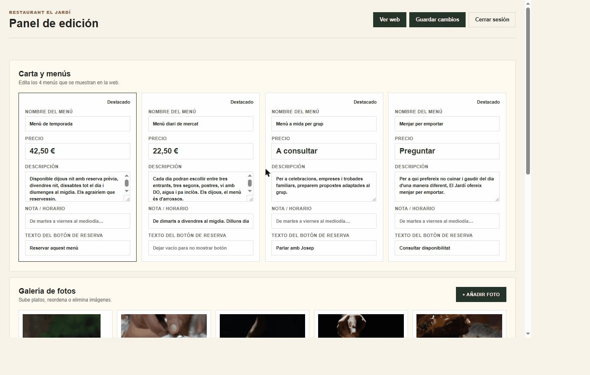
Restaurant El Jardí
Web para restaurante centenario con cocina mediterránea, pensada para presentar sus menús, su historia y su carta de forma cuidada. El propio negocio edita menús y galería desde su panel.
- Menús y precios editables sin tocar código
- Galería de platos gestionable desde el panel
- Presentación de historia y espacios del local
Carta y menú del día
Vermutería
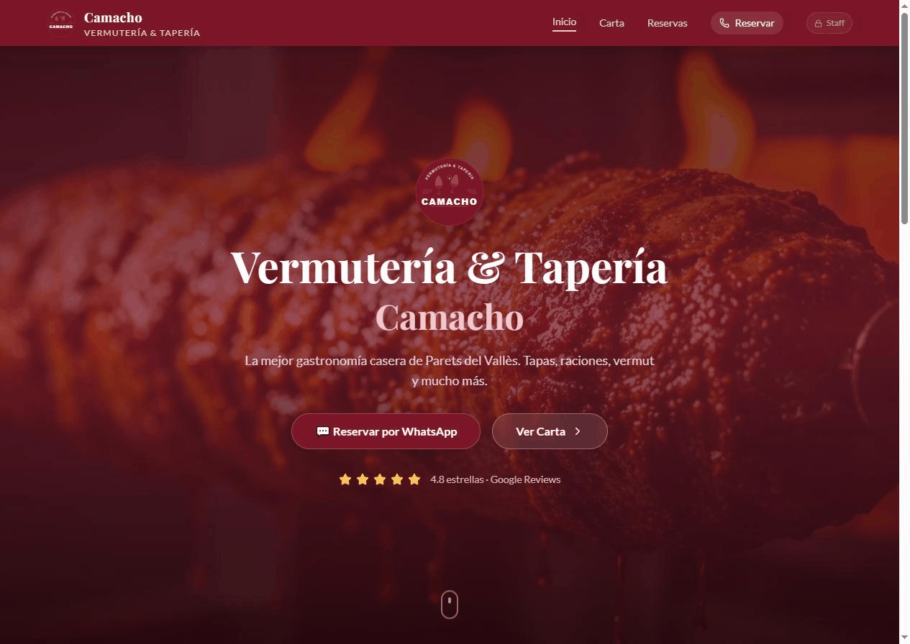
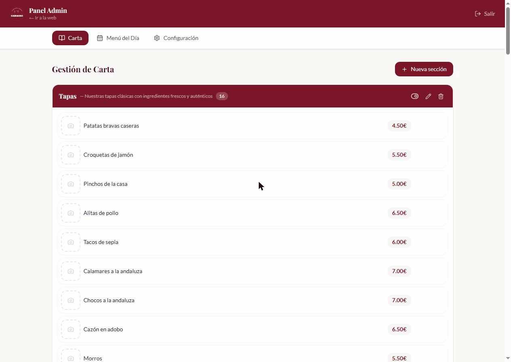
Vermutería & Tapería Camacho
Web para vermutería y tapería con carta completa por categorías, menú del día y reserva directa por WhatsApp. Panel propio para actualizar carta y menú del día cada semana.
- Carta organizada por categorías con fotos
- Menú del día editable desde el panel
- Reserva directa por WhatsApp
Servicios
Web corporativa profesional
Páginas serias para explicar la empresa, sus servicios y sus diferenciales con autoridad.
Landing de captación
Estructura enfocada en convertir visitas en llamadas, formularios, reservas o presupuestos.
Reservas, pedidos y flujos
Soluciones para que el cliente pueda pedir, reservar o dejar sus datos de forma sencilla.
Mejora de webs existentes
Auditoría visual, técnica y comercial para convertir una web con bajo rendimiento en una herramienta fiable.


Método
Un proceso ordenado para que el proyecto avance con control.
-
1
Diagnóstico
Definimos el problema, el público, los objetivos y qué debe hacer la web para aportar valor real.
-
2
Estructura
Ordeno secciones, mensajes, llamadas a la acción y flujos antes de entrar al diseño final.
-
3
Construcción
Desarrollo una web responsive, rápida y limpia, con especial cuidado en la experiencia real.
-
4
Entrega y mejora
Reviso rendimiento, textos, conversión y dejo una base preparada para futuras iteraciones.
Empezamos con una conversación
Cuéntame qué problema quieres resolver con tu web.
En una primera revisión puedo ayudarte a detectar qué está frenando tu presencia digital, qué necesita tu negocio y qué tipo de web tendría más impacto.